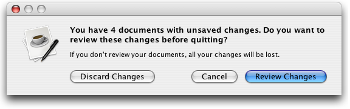

Property |
Type | Notes |
|---|---|---|
|
java.lang.Integer |
Specifies the index of the destructive option. |
Quaqua displays JOptionPanes like a Mac OS X style alert.

Unfortunately lots of the visual elements are controlled by the application and not by the UI.
To perfectly follow Apple's Human Interface Guidelines for Dialogs, you should do the following:
Create a 64 x 64 pixel PNG version of your application icon, and replace the default JOptionPane icons. This is best done immediately after setting the look and feel.
UIManager.setLookAndFeel(QuaquaManager.getLookAndFeel());
Object appIcon = LookAndFeel.makeIcon( getClass(), "appicon.png" ); |
One way to do this with minimal impact on the application logic, is putting a CSS style sheet into the UIManager, and using it whenever a dialog is created.
String css = "<head>"+ |
Using this approach, you can specify a different CSS style sheet for each look and feel your application is using. Seen the code snippet below, on how to use this CSS style sheet.
If your option pane contains a destructive option,
you should use the client property Quaqua.OptionPane.destructiveOption to
specify its index using an Integer value.
The code snippet below makes use of the CSS style sheet we have defined above.
JOptionPane pane = new JOptionPane( "Do you want to<br>"+ "Review Changes", "Cancel", "Discard Changes" }; "Quaqua.OptionPane.destructiveOption", new Integer(2) ); |
Quaqua uses the UIManager property OptionPane.messageLabelWidth=360
to determine the width of HTML messages and OptionPane.maxCharacterPerLineCount=60
to determine the width of text messages. You can change these values if they don't fit your requirements.